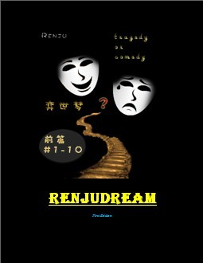

弈世梦前篇精简书籍发布预告重载及有奖问答（内有150+夺鲜花）
#1 弈世梦前篇精简书籍发布预告重载及有奖问答（内有150+夺鲜花） 作者：迪空 发表时间：2011-12-5 0:42:19
I。弈世梦前篇珍藏修饰版发布。

II。弈世梦重载预告
2011年12月10日 第十九章 DARK GAME
2011年12月15日 第二十章 LAME AND THE TEN
2012年01月25日 第二十一章 WIN OR LOSE
III。弈世梦有奖问答
I：以下是抢答题。 答案均可在文中直接或间接找出。
文中提过的大圭棋道馆三大家族是哪三大？ [9朵]
文中提过的大圭棋道馆的三大名人都是谁？ [9朵]
文中提过第一轮的考官是谁，考题是什么，一共有几人过关？[9朵]
II：以质量为评分参考， 也就是说如果只有一个人回答，那就获全部鲜花，
如果有两人回答，一人回答的好，一人回答的不好或者跟先前回答者答案差不多。 那就
有可能好的那人得到24朵，不好的那人有可能得1朵。
1-请猜测五大棋道馆的名称 [ 25朵 ]
2-请解释名人战体系如何运行 [ 20朵 ]
3-请解释第十六章中岩星用的小技巧在心理学上叫什么。[20朵]
III-没有标准答案，奖励也无标准。
-请猜测以作者的构思来回答弈世梦的剧情结构怎么形成？[50+朵]
［ 微微一笑 于 2011-12-6 18:55:44 时花20金币送鲜花一朵］
#2 Re:弈世梦前篇精简书籍发布预告重载及有奖问答（内有150+夺鲜花） 作者：蓝天蓝 发表时间：2011-12-5 14:15:11
文中提过的大圭棋道馆三大家族是：云之家族、山之家族和龟之家族
［ 迪空 于 2012-1-21 0:31:28 时花20金币送鲜花一朵］
［ 迪空 于 2012-1-21 0:31:31 时花20金币送鲜花一朵］
［ 迪空 于 2012-1-21 0:31:33 时花20金币送鲜花一朵］
［ 迪空 于 2012-1-21 0:31:35 时花20金币送鲜花一朵］
［ 迪空 于 2012-1-21 0:31:36 时花20金币送鲜花一朵］
［ 迪空 于 2012-1-21 0:31:38 时花20金币送鲜花一朵］
［ 迪空 于 2012-1-21 0:31:40 时花20金币送鲜花一朵］
［ 迪空 于 2012-1-21 0:31:42 时花20金币送鲜花一朵］
［ 迪空 于 2012-1-21 0:31:43 时花20金币送鲜花一朵］
#3 Re:弈世梦前篇精简书籍发布预告重载及有奖问答（内有150+夺鲜花） 作者：不知取何名 发表时间：2011-12-5 14:47:00
文中提过第一轮的考官是迪克，考题是VCF，一共有30过关
［ 迪空 于 2012-1-21 0:32:02 时花20金币送鲜花一朵］
［ 迪空 于 2012-1-21 0:32:03 时花20金币送鲜花一朵］
［ 迪空 于 2012-1-21 0:32:04 时花20金币送鲜花一朵］
［ 迪空 于 2012-1-21 0:32:06 时花20金币送鲜花一朵］
［ 迪空 于 2012-1-21 0:32:07 时花20金币送鲜花一朵］
［ 迪空 于 2012-1-21 0:32:09 时花20金币送鲜花一朵］
［ 迪空 于 2012-1-21 0:32:10 时花20金币送鲜花一朵］
［ 迪空 于 2012-1-21 0:32:12 时花20金币送鲜花一朵］
［ 迪空 于 2012-1-21 0:32:13 时花20金币送鲜花一朵］
#4 Re:弈世梦前篇精简书籍发布预告重载及有奖问答（内有150+夺鲜花） 作者：不知取何名 发表时间：2011-12-5 15:19:16
文中提过的大圭棋道馆的三大名人:罗门、卡波罗、思同［此帖子已被 不知取何名 在 2011-12-5 15:48:19 编辑过］
［ 迪空 于 2012-1-21 0:32:26 时花20金币送鲜花一朵］
［ 迪空 于 2012-1-21 0:32:28 时花20金币送鲜花一朵］
［ 迪空 于 2012-1-21 0:32:30 时花20金币送鲜花一朵］
［ 迪空 于 2012-1-21 0:32:31 时花20金币送鲜花一朵］
［ 迪空 于 2012-1-21 0:32:33 时花20金币送鲜花一朵］
［ 迪空 于 2012-1-21 0:32:34 时花20金币送鲜花一朵］
［ 迪空 于 2012-1-21 0:32:36 时花20金币送鲜花一朵］
［ 迪空 于 2012-1-21 0:32:37 时花20金币送鲜花一朵］
［ 迪空 于 2012-1-21 0:32:39 时花20金币送鲜花一朵］
#5 Re:弈世梦前篇精简书籍发布预告重载及有奖问答（内有150+夺鲜花） 作者：踵酃 发表时间：2011-12-8 1:34:11
回答第三大题。
答案是：做梦
［ 迪空 于 2012-1-21 0:33:36 时花20金币送鲜花一朵］
#6 Re:弈世梦前篇精简书籍发布预告重载及有奖问答（内有150+夺鲜花） 作者：迪空 发表时间：2011-12-10 12:29:16
顺便说下， 截止时间是1月20日。
#7 Re:弈世梦前篇精简书籍发布预告重载及有奖问答（内有150+夺鲜花） 作者：满月 发表时间：2011-12-16 13:19:46
II、3-请解释第十六章中岩星用的小技巧在心理学上叫什么
门面效应
所谓“门面效应”，是另外一种说服别人接受自己要求的方法：当你想让对方接受的是一个小的、但对方一般也不会答应的条件，那么你不妨先向他提出一个大的、更高的要求。对方拒绝你大的更高的要求，一般会接受你再次提出的那个小的要求。“门面效应”就是利用人们的补偿心理，正如“登门槛效应”里所说的那样，人们往往都希望扮演慷慨大方的角色，所以拒绝别人也是一件难事。拒绝，一般会让人们无法扮演慷慨大方的角色，也会让人们产生负疚的心理，人们通常希望再做一件小的、容易的事来平衡心里的内疚，使其能够继续扮演慷慨大方的角色。女人的同情心强，容易产生负疚的心理，“门面效应”对女士通常更有效。
［ 迪空 于 2012-1-21 0:34:01 时花20金币送鲜花一朵］
［ 迪空 于 2012-1-21 0:34:02 时花20金币送鲜花一朵］
［ 迪空 于 2012-1-21 0:34:04 时花20金币送鲜花一朵］
［ 迪空 于 2012-1-21 0:34:05 时花20金币送鲜花一朵］
［ 迪空 于 2012-1-21 0:34:07 时花20金币送鲜花一朵］
［ 迪空 于 2012-1-21 0:34:08 时花20金币送鲜花一朵］
［ 迪空 于 2012-1-21 0:34:09 时花20金币送鲜花一朵］
［ 迪空 于 2012-1-21 0:34:11 时花20金币送鲜花一朵］
［ 迪空 于 2012-1-21 0:34:12 时花20金币送鲜花一朵］
［ 迪空 于 2012-1-21 0:34:14 时花20金币送鲜花一朵］
［ 迪空 于 2012-1-21 0:34:15 时花20金币送鲜花一朵］
［ 迪空 于 2012-1-21 0:34:16 时花20金币送鲜花一朵］
［ 迪空 于 2012-1-21 0:34:18 时花20金币送鲜花一朵］
［ 迪空 于 2012-1-21 0:34:19 时花20金币送鲜花一朵］
［ 迪空 于 2012-1-21 0:34:20 时花20金币送鲜花一朵］
［ 迪空 于 2012-1-21 0:34:22 时花20金币送鲜花一朵］
［ 迪空 于 2012-1-21 0:34:23 时花20金币送鲜花一朵］
［ 迪空 于 2012-1-21 0:34:25 时花20金币送鲜花一朵］
［ 迪空 于 2012-1-21 0:34:28 时花20金币送鲜花一朵］
［ 迪空 于 2012-1-21 0:34:30 时花20金币送鲜花一朵］
#8 Re:弈世梦前篇精简书籍发布预告重载及有奖问答（内有150+夺鲜花） 作者：满月 发表时间：2011-12-16 13:41:29
II、1-请猜测五大棋道馆的名称
就目前连载的内容来说，已经出现了两个棋道馆，分别为大圭和大炎。
有理由猜测作者是根据金木水火土五个元素来命名的。
因此猜测剩下的三个棋道馆分别是大鑫棋道馆，大森棋道馆，大淼棋道馆。
补充：由于给出的两个棋道馆大圭和大炎分别由两个单体字组成，也不排除木对应的是大林棋道馆，不过似乎不如大森棋道馆读得顺口。如果不是大林棋道馆，剩下的三个都是有三个单体字组成的话区别于土不对应垚，火不对应焱，也许是这三个还没出场的棋道馆有一些特别之处，也许正是作者安排的伏笔，那就更加期待了。
#9 Re:弈世梦前篇精简书籍发布预告重载及有奖问答（内有150+夺鲜花） 作者：踵酃 发表时间：2011-12-17 7:03:58
多谢楼上给的分析阿， 前面既然都是两个两个，后面也应该是，不然就不符合推测了。
那我猜测剩下的三个棋道馆分别是： 大林棋道馆， 大鍂棋道馆， 大沝棋道馆。
煮熟的鸭子被我吃啦。 哈哈
［ 迪空 于 2012-1-21 0:34:50 时花20金币送鲜花一朵］
［ 迪空 于 2012-1-21 0:34:52 时花20金币送鲜花一朵］
［ 迪空 于 2012-1-21 0:34:54 时花20金币送鲜花一朵］
［ 迪空 于 2012-1-21 0:34:56 时花20金币送鲜花一朵］
［ 迪空 于 2012-1-21 0:34:58 时花20金币送鲜花一朵］
［ 迪空 于 2012-1-21 0:34:59 时花20金币送鲜花一朵］
［ 迪空 于 2012-1-21 0:35:00 时花20金币送鲜花一朵］
［ 迪空 于 2012-1-21 0:35:02 时花20金币送鲜花一朵］
［ 迪空 于 2012-1-21 0:35:03 时花20金币送鲜花一朵］
［ 迪空 于 2012-1-21 0:35:05 时花20金币送鲜花一朵］
［ 迪空 于 2012-1-21 0:35:06 时花20金币送鲜花一朵］
［ 迪空 于 2012-1-21 0:35:07 时花20金币送鲜花一朵］
［ 迪空 于 2012-1-21 0:35:08 时花20金币送鲜花一朵］
［ 迪空 于 2012-1-21 0:35:10 时花20金币送鲜花一朵］
［ 迪空 于 2012-1-21 0:35:13 时花20金币送鲜花一朵］
［ 迪空 于 2012-1-21 0:35:14 时花20金币送鲜花一朵］
［ 迪空 于 2012-1-21 0:35:16 时花20金币送鲜花一朵］
［ 迪空 于 2012-1-21 0:35:17 时花20金币送鲜花一朵］
［ 迪空 于 2012-1-21 0:35:19 时花20金币送鲜花一朵］
［ 迪空 于 2012-1-21 0:35:21 时花20金币送鲜花一朵］
#10 Re:Re:弈世梦前篇精简书籍发布预告重载及有奖问答（内有150+夺鲜花） 作者：满月 发表时间：2011-12-17 12:27:30
大林这个名字太俗，后面两个字都很生僻，因此都不太可能采纳。
我更愿意猜测大圭、大炎之所以是两个单体字很有可能是出于某些力量被“封印”或隐藏的原故，由此可以牵出一段历史，或者两个棋道馆有其各自的地毯研究被秘密隐藏，到新改革的名人战中突然解除封印，开启后杀得其他棋道馆措手不及，然后改名大焱，大垚棋道馆，哈哈
#11 Re:弈世梦前篇精简书籍发布预告重载及有奖问答（内有150+夺鲜花） 作者：迪空 发表时间：2012-1-21 0:25:25
I:
1.蓝天蓝 9 f
2.3.不知取何名 18 f
ＩＩ：
１．踵酃 20ｆ
２．－－
３．满月 20
ＩＩＩ．
踵酃 １ｆ
68/150 = 43 %
恭喜获奖童鞋，近期鲜花奉上（：：）
［ 微微一笑 于 2012-1-21 16:39:10 时花20金币送鲜花一朵］